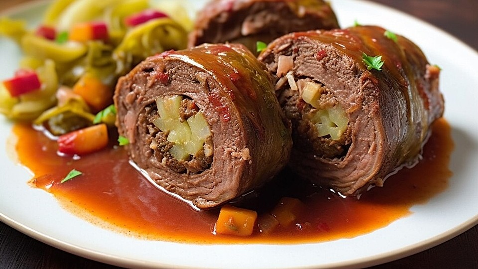

Rinderrouladen klassisch

 60 Min.
60 Min.
 pfiffig
pfiffig
 24.07.2012
24.07.2012
Zutaten für
Zutaten für
| 8 | Rinderroulade(n) |
| 5 | Zwiebeln |
| 4 | Gewürzgurken |
| 4 EL | Senf, mittelscharfer |
| 12 Scheibe(n) | Frühstückspeck |
| 2 EL | Butterschmalz |
| 1 Stück(e) | Knollensellerie |
| 1 | Möhre(n) |
| 0.5 Stange(n) | Lauch |
| 0.5 Flasche | Rotwein, guter, ca. 375ml |
| Salz und Pfeffer | |
| 0.5 Liter | Rinderfond, kräftiger |
| TL | Speisestärke |
| 1 Schuss | Gurkenflüssigkeit |
Zubereitung
 Arbeitszeit ca. 1 Stunde
Arbeitszeit ca. 1 Stunde
 Koch-/Backzeit ca. 2 Stunden
Koch-/Backzeit ca. 2 Stunden
 Gesamtzeit ca. 3 Stunden
Gesamtzeit ca. 3 Stunden
Die Rinderrouladen mit Küchenkrepp trockentupfen. Zwiebeln in Halbmonde, Gurken in Längsstreifen schneiden. Schere und Küchengarn bereitstellen.
Die ausgebreiteten Rouladen dünn mit Senf bestreichen, salzen und pfeffern.
Die ausgebreiteten Rouladen dünn mit Senf bestreichen, salzen und pfeffern. Auf jede Roulade mittig in der Länge ca. 1/2 Zwiebel und 1 1/2 Scheiben Frühstücksspeck sowie 1/2 (evtl. mehr) Gurke verteilen. Nun von beiden Längsseiten etwas einschlagen, dann einrollen und mit dem Küchengarn wie ein Postpaket verschnüren.
In einer Pfanne das Butterschmalz heiß werden lassen und die Rouladen rundherum darin anbraten.
Herausnehmen und in einen Schmortopf umfüllen.
Den Sellerie, die restliche Zwiebel, Lauch und Möhren kleinschneiden und in der Pfanne anbraten.
Sobald sie halbwegs "blond" sind, kurz rühren.
Eine sehr dünne Schicht vom Rotwein angießen, nicht mehr rühren und die Flüssigkeit verdampfen lassen.
Sobald das Gemüse dann wieder trockenbrät, wieder eine Schicht Wein angießen, kurz rühren und weiter verdampfen lassen.
Dies wiederholen, bis die 1/2 Flasche Wein aufgebraucht ist. Auf diese Art wird das Röstgemüse sehr braun (gut für den Geschmack und die Farbe der Soße), aber nicht trocken.
Am Schluss mit dem Rinderfond, etwas Salz und Pfeffer und einem guten Schuss Gurkensud auffüllen und dann in den Schmortopf zu den Rouladen geben. Den Deckel auflegen.
Den Topf entweder auf kleine Flamme stellen oder bei ca. 160 °C Ober-/Unterhitze in den Backofen für 1 1/2 Stunden geben. Ab und zu evtl. etwas Flüssigkeit zugießen.
Nach 1 1/2 Stunden testen, ob die Rouladen weich sind (einfach mal mit den Kochlöffel ein bisschen draufdrücken, sie sollten sich willig eindrücken lassen - wenn nicht, noch eine halbe Stunde weiterschmoren).
Dann vorsichtig aus dem Topf heben und warm stellen.
Die Soße durch ein Sieb geben und wieder aufkochen lassen. Ca. 1 EL Senf mit etwas Wasser und der Speisestärke gut verrühren, in die kochende Soße nach und nach unter Rühren gießen, bis die gewünschte Konsistenz erreicht ist. Die Soße nochmal mit Salz, Pfeffer, Rotwein und Gurkensud abschmecken.
Rezept erstellt von

Alex